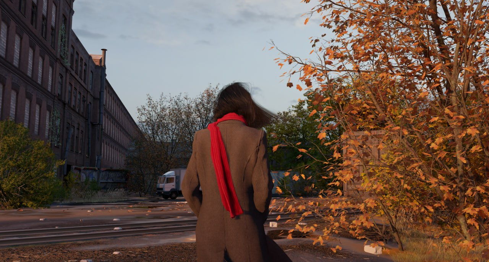

Portfolio
THE LIFT
A first-person simulator where satisfying handyman gameplay meets a mysterious sci-fi story.
I was the narrative lead.
Steam
Pathologic 3
In this psychological horror game, you are a doctor with only 12 days to save a town from a mysterious plague. Make ruthless decisions and diagnose with
precision. Shape the town's
future and rewrite the past. Hold yourself together while it all falls apart.
I was a narrative & game designer.
Steam
Stygian: Outer Gods
Dive into a hostile world that challenges your very existence, in this survival horror game with RPG elements. Unravel a thousand-year-old mystery, risk your
sanity and face the
Outer Gods with your skills. Every bullet and every decision counts now, are you up to the task?
I was a narrative designer.
Steam

Faded
A surreal sandbox immersive sim.
I was a narrative & game designer.
Twitter
Bylina
Enter a world of Slavic myth and medieval adventure. As a young bogatyr, journey to the Thrice-Nine Kingdom, challenge Koschei the Deathless, and save your
immortal soul in Bylina—an epic action-adventure rooted in Slavic folklore, with a heavy focus on skill-based combat.
I was a game designer.
Steam
The Whisker Watch
PLAY AS YOUR CAT(s) in a co-op roguelike of night prowls, day naps, and endless mischief! claw at haunted appliances, fight chthonic horrors, and upgrade
your cozy mansion!
Customize your meow, accessories, and fur; Pet your human for perks!
I was a narrative & game designer.
Steam

Divinheim
Action-packed seafaring journey through an oppressive world full of darkness and monsters, in which you can manipulate and bend water with complete freedom.
I was the narrative designer.
Twitter